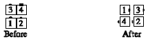

From tandem couples, box circulate, and some T-bone boxes (there are usually 2 leads and 2 trailers): All 1/4 In, and the original lead dancers Pass Thru (on the diagonal, if necessary) to form a right-hand mini-wave with the others. The original trailers slide sideways if necessary. Finishes in a right-hand mini-wave, except for some T-bone boxes.
